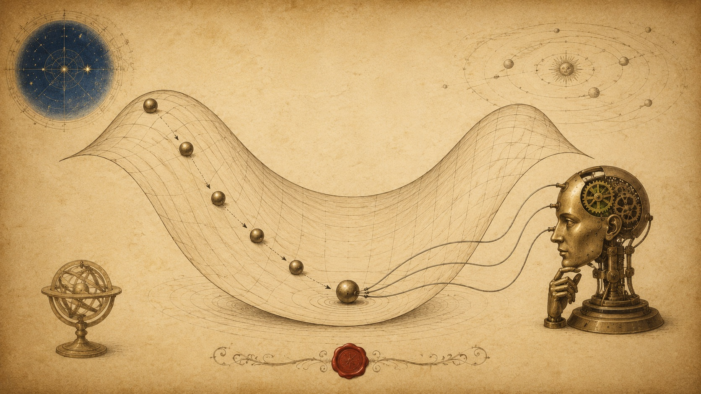

Chapter 08 · Investigations in the Wild
Calculus in the World
I studied change to understand the heavens — the fall of an apple and the sweep of the Moon obey one law. But the machinery we have built reaches far past astronomy. Everywhere a quantity changes, or must be made as large or as small as possible, calculus is doing quiet work. Let us end by seeing it at labour in the world of 2026.
First use: finding the best — optimisation
A derivative is zero where a curve is momentarily level — at a hilltop or a valley. So to find the largest or smallest value of something, we set its derivative to zero and solve. This one idea — optimisation — is worth untold fortunes.
The most spacious pen for the least fence
You have 100 metres of fencing for a rectangular pen. What shape holds the most area? Let the width be x; then the depth is 50−x, and the area is A(x)=x(50−x)=50x−x². Its rate is A′(x)=50−2x. Set it to zero:
A 25×25 square — the derivative reveals that the square is the most efficient rectangle. The same reasoning shapes soup cans, shipping crates, and antenna arrays.
The use that reshaped our century: how machines learn
This is the application you have heard the most about and understood the least — and you already hold every piece of it. An artificial intelligence "learns" by adjusting millions of internal numbers (its weights) to make its errors small. Define a loss — a single number measuring how wrong the machine is. Learning is nothing but optimisation: make the loss as small as possible.
But the loss surface has millions of dimensions; we cannot solve f′=0 directly. So we do the next best thing — we roll downhill. The derivative (here called the gradient) points in the direction of steepest ascent, so we step the opposite way:
Take a step against the slope; recompute the slope; step again. This is gradient descent, and it is how every large language model and image generator alive was trained. Roll the ball yourself — and discover the peril of too large a step.
The green curve is the "loss". The ball follows −ηf′ downhill toward the minimum. Nudge η small and it crawls; push it too large and it overshoots and thrashes — the exact tuning problem every AI engineer wrestles with daily.

An elegant editorial illustration in an 18th-century natural-philosopher manuscript style, aged vellum and iron-gall sepia palette with astronomical indigo and one spot of vermilion: a rolling metal ball descending into the lowest point of a smooth undulating valley drawn as a mathematical surface with faint contour lines, tiny dotted tangent arrows showing the downhill direction at each step. Beside the valley, a small brass automaton "thinking head" wired to the ball, suggesting a machine learning by rolling downhill. Flat vector style with subtle paper grain, generous whitespace, no text baked in. ~1280×720px, 16:9 landscape; keep the valley and ball centred with safe margins — it is letterboxed into a 16:9 box, so keep nothing important near the edges.
Generate this with your image agent, then drop the file here.
More of the world, written in calculus
Physics & engineering — my old country
My second law is a differential equation: force sets the rate of change of momentum, F = m a = m dv/dt. Every rocket trajectory, bridge stress, orbit, and climate model is the solving of such equations — integrating known rates forward to predict the future.
Epidemics — the calculus of contagion
The spread of a disease is modelled by rates of flow between groups — Susceptible, Infected, Recovered. The famous SIR model is three coupled derivatives:
Public-health forecasts through the 2020s — and still today — integrate exactly these equations to predict a curve's peak and to weigh interventions.
Finance — pricing an uncertain future
The Black–Scholes equation — a partial differential equation — governs the fair price of a stock option as it changes with price and time. Trillions of dollars of derivatives are priced and hedged by solving it; it earned a Nobel Prize and underpins modern markets.
Medicine, graphics, and the everyday
- Drug dosing — a medicine clears the blood by exponential decay, C′=−kC; calculus sets the interval between doses.
- Computer graphics & games — every smooth camera path, physics collision, and lighting integral is calculus rendered 60 times a second.
- Signal & image — the calculus of accumulation (the Fourier integral) is how your phone compresses a photo and cleans up a voice.
Reflection — and a beginning
We started with a stone I could hold in my hand and asked only how fast it fell. That one honest question, pursued without flinching into the infinite, gave us the derivative, the integral, the theorem that binds them, and a toolkit that now prices options and teaches machines to see. You did not memorise this; you rebuilt it. Go and find the changing quantity in something you care about — and ask it how fast, and how much. That question is the whole of calculus, and it is now yours.